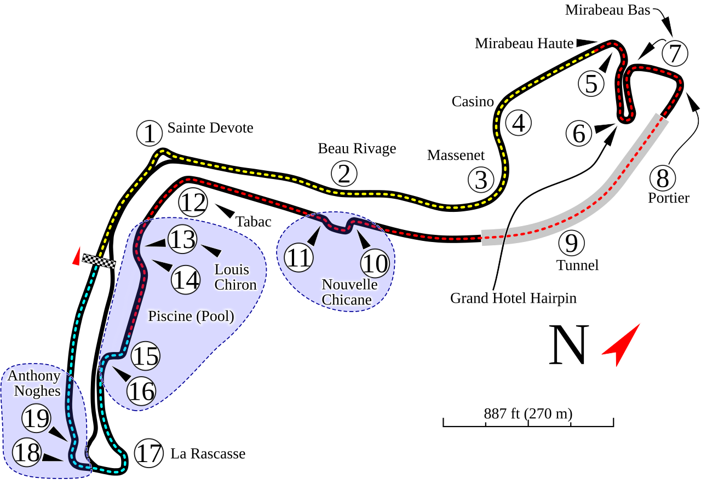

Presentación oficial de la carrera
El Formula 1 Louis Vuitton Grand Prix de Monaco 2026 se celebró del 05 al 07 de junio de 2026 en el histórico trazado urbano del Circuit de Monaco en Montecarlo, siendo una de las citas más técnicas y emblemáticas del calendario mundial.

Para consultar la ficha técnica y la historia oficial del circuito, visita: Portal oficial de Formula 1 - Gran Premio de Mónaco
Cronograma oficial de las sesiones
- Viernes 05 de junio: Entrenamientos libres 1 y Entrenamientos libres 2.
- Sábado 06 de junio: Entrenamientos libres 3 y Sesión de clasificación oficial.
- Domingo 07 de junio: Carrera principal del Gran Premio (78 vueltas).
Datos técnicos del Circuit de Monaco
- Ubicación: Montecarlo, Principado de Mónaco.
- Longitud por vuelta: 3,337 kilómetros.
- Distancia total de carrera: 260,286 kilómetros (78 vueltas).
- Puntos característicos: Curva de Sainte Dévote, Casino Square, Horquilla Fairmont y túnel de Montecarlo.